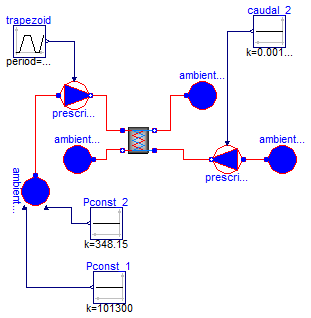
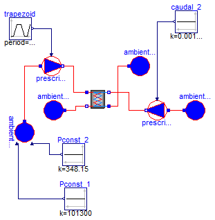

| Name | Description |
|---|---|
| Validacion_01 | Pruebas de verificación de funcionamiento del modelo del intercambiador de placas 0.5 |
| Validacion_02 | Pruebas de verificación de funcionamiento del modelo del intercambiador de placas a contraflujo |

model Validacion_01
"Pruebas de verificación de funcionamiento del modelo del intercambiador de placas 0.5"
Modelica.Thermal.FluidHeatFlow.Sources.PrescribedVolumeFlow
prescribedVolumeFlow_1(
m=0.1,
T0=348.15,
medium=Soltermica.Media.Propilenglicol_30_25());
Modelica.Thermal.FluidHeatFlow.Sources.PrescribedVolumeFlow
prescribedVolumeFlow_2(medium=Modelica.Thermal.FluidHeatFlow.Media.Water(),
m=0.1,
T0=323.15);
Modelica.Thermal.FluidHeatFlow.Sources.Ambient ambiente_a_2(
medium=Modelica.Thermal.FluidHeatFlow.Media.Water(),
p_Ambient=101300,
T_Ambient=Modelica.SIunits.Conversions.from_degC(50));
Modelica.Blocks.Sources.Constant caudal_2(k=0.00148)
"Caudal masico consigna secundario";
Modelica.Thermal.FluidHeatFlow.Sources.Ambient ambiente_b_1(
p_Ambient=101300,
T_Ambient=293.15,
medium=Soltermica.Media.Propilenglicol_30_25());
Modelica.Thermal.FluidHeatFlow.Sources.Ambient ambiente_b_2(
medium=Modelica.Thermal.FluidHeatFlow.Media.Water(),
p_Ambient=101300,
T_Ambient=293.15);
Modelica.Thermal.FluidHeatFlow.Sources.PrescribedAmbient ambiente_a_1(medium=
Soltermica.Media.Propilenglicol_30_25());
Modelica.Blocks.Sources.Constant Pconst_1(k=101300);
Modelica.Blocks.Sources.Constant Pconst_2(k=348.15);
Modelica.Blocks.Sources.Trapezoid trapezoid(
amplitude=0.001553,
rising=60,
falling=60,
period=600,
startTime=10,
width=500);
IntercambiadorPlacas intercambiadorPlacas(
n=5,
medium_1=Soltermica.Media.Propilenglicol_30_25(),
medium_2=Modelica.Thermal.FluidHeatFlow.Media.Water(),
espec=Soltermica.Intercambiadores.Placas.CatalogoEquipos.Fagor_IP_50(),
T_ini=293.15);
equation
connect(ambiente_a_2.flowPort, prescribedVolumeFlow_2.flowPort_a);
connect(Pconst_1.y, ambiente_a_1.p_Ambient);
connect(ambiente_a_1.flowPort, prescribedVolumeFlow_1.flowPort_a);
connect(caudal_2.y, prescribedVolumeFlow_2.VolumeFlow);
connect(ambiente_a_1.T_Ambient, Pconst_2.y);
connect(trapezoid.y, prescribedVolumeFlow_1.VolumeFlow);
connect(prescribedVolumeFlow_1.flowPort_b, intercambiadorPlacas.flowPort_a_1);
connect(ambiente_b_1.flowPort, intercambiadorPlacas.flowPort_b_1);
connect(intercambiadorPlacas.flowPort_a_2, prescribedVolumeFlow_2.flowPort_b);
connect(intercambiadorPlacas.flowPort_b_2, ambiente_b_2.flowPort);
end Validacion_01;

model Validacion_02
"Pruebas de verificación de funcionamiento del modelo del intercambiador de placas a contraflujo"
Modelica.Thermal.FluidHeatFlow.Sources.PrescribedVolumeFlow
prescribedVolumeFlow_1(
m=0.1,
T0=348.15,
medium=Soltermica.Media.Propilenglicol_40_25());
Modelica.Thermal.FluidHeatFlow.Sources.PrescribedVolumeFlow
prescribedVolumeFlow_2(medium=Modelica.Thermal.FluidHeatFlow.Media.Water(),
m=0.1,
T0=323.15);
Modelica.Thermal.FluidHeatFlow.Sources.Ambient ambiente_a_2(
medium=Modelica.Thermal.FluidHeatFlow.Media.Water(),
p_Ambient=101300,
T_Ambient=Modelica.SIunits.Conversions.from_degC(50));
Modelica.Blocks.Sources.Constant caudal_2(k=0.00148)
"Caudal masico consigna secundario";
Modelica.Thermal.FluidHeatFlow.Sources.Ambient ambiente_b_1(
p_Ambient=101300,
T_Ambient=293.15,
medium=Soltermica.Media.Propilenglicol_40_25());
Modelica.Thermal.FluidHeatFlow.Sources.Ambient ambiente_b_2(
medium=Modelica.Thermal.FluidHeatFlow.Media.Water(),
p_Ambient=101300,
T_Ambient=293.15);
Modelica.Thermal.FluidHeatFlow.Sources.PrescribedAmbient ambiente_a_1(medium=
Soltermica.Media.Propilenglicol_40_25());
Modelica.Blocks.Sources.Constant Pconst_1(k=101300);
Soltermica.Intercambiadores.Placas.IntercambiadorPlacas intercambiadorMulti(
medium_2=Modelica.Thermal.FluidHeatFlow.Media.Water(),
espec=Soltermica.Intercambiadores.Placas.CatalogoEquipos.Fagor_IP_50(),
T0=348.15,
medium_1=Soltermica.Media.Propilenglicol_40_25(),
n=4);
Modelica.Blocks.Sources.Constant Pconst_2(k=348.15);
Modelica.Blocks.Sources.Trapezoid trapezoid(
amplitude=0.001553,
rising=60,
width=300,
falling=60,
period=600,
startTime=10);
equation
connect(ambiente_a_2.flowPort, prescribedVolumeFlow_2.flowPort_a);
connect(Pconst_1.y, ambiente_a_1.p_Ambient);
connect(ambiente_a_1.flowPort, prescribedVolumeFlow_1.flowPort_a);
connect(caudal_2.y, prescribedVolumeFlow_2.VolumeFlow);
connect(prescribedVolumeFlow_1.flowPort_b, intercambiadorMulti.flowPort_a_1);
connect(ambiente_b_1.flowPort, intercambiadorMulti.flowPort_b_1);
connect(ambiente_a_1.T_Ambient, Pconst_2.y);
connect(trapezoid.y, prescribedVolumeFlow_1.VolumeFlow);
connect(ambiente_b_2.flowPort, intercambiadorMulti.flowPort_a_2);
connect(prescribedVolumeFlow_2.flowPort_b, intercambiadorMulti.flowPort_b_2);
end Validacion_02;